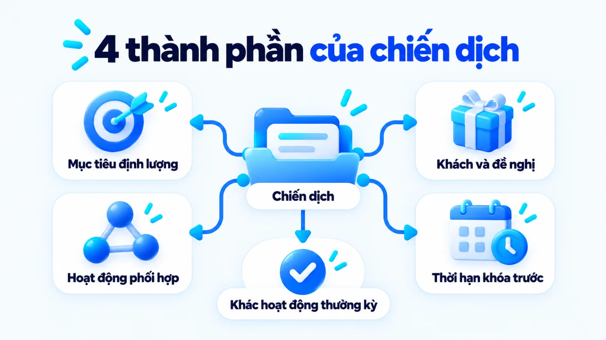
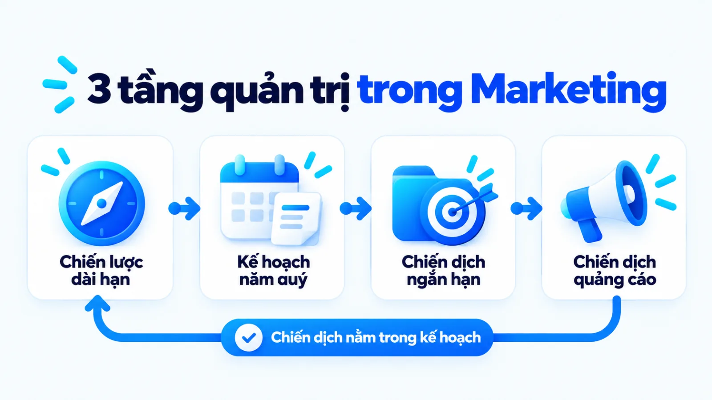
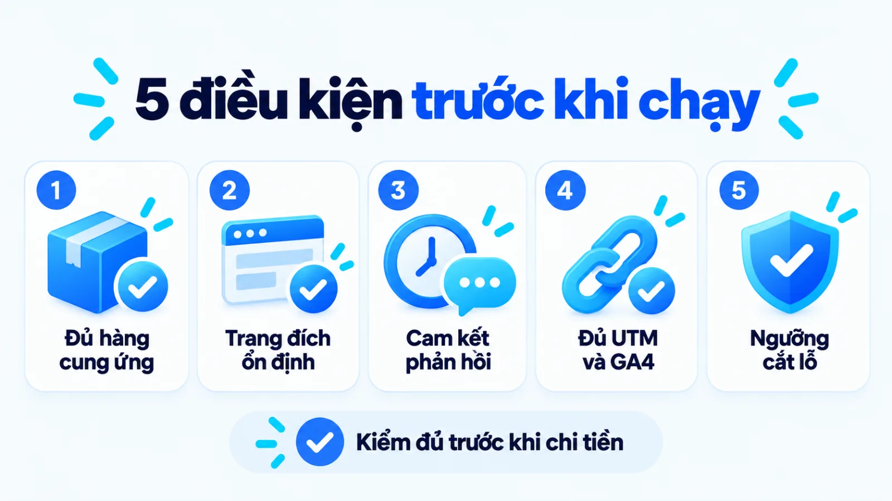
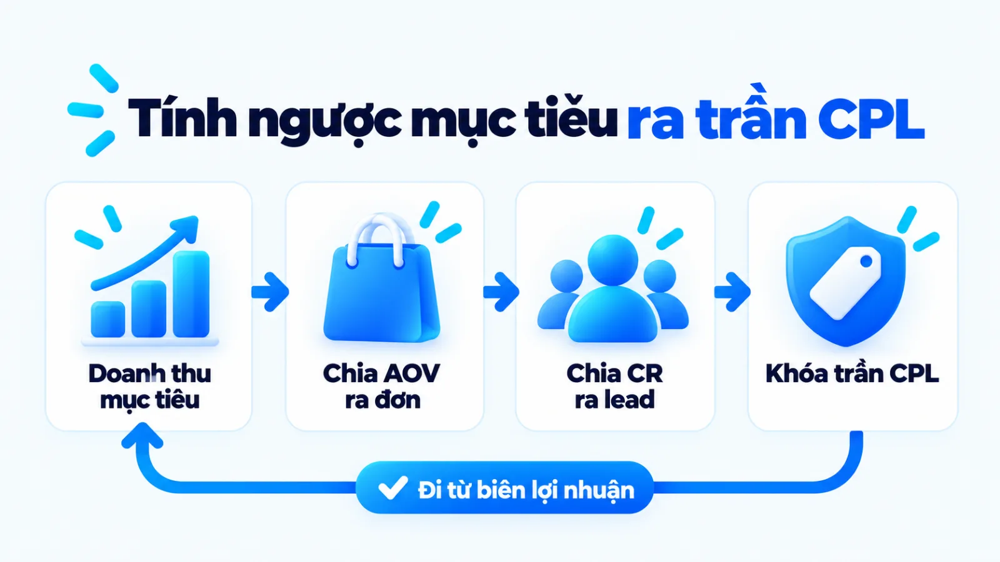
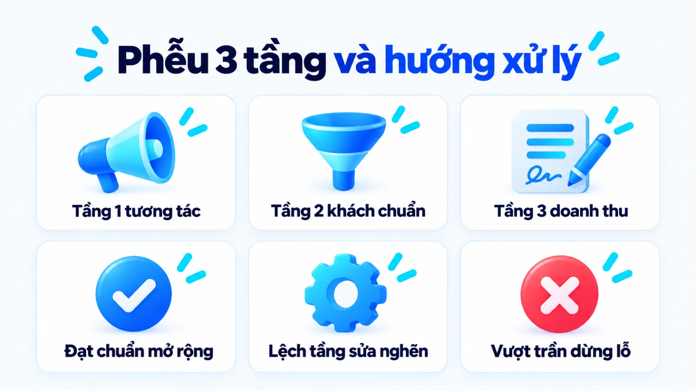
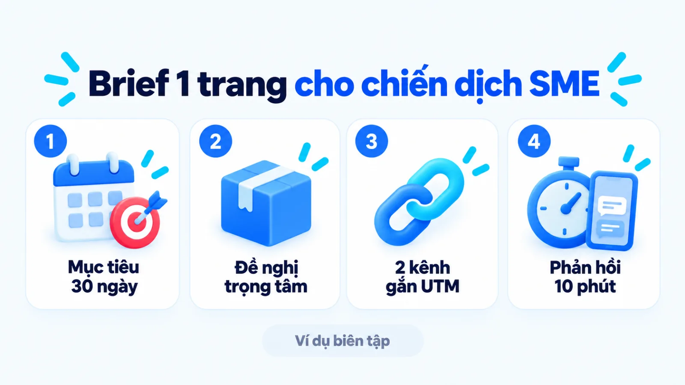

Chiến dịch Marketing là gì, cách lập cho SME
Chiến dịch Marketing là tập hợp các hoạt động tiếp thị được phối hợp quanh một thông điệp thống nhất nhằm đạt mục tiêu kinh doanh cụ thể cho nhóm khách hàng xác định trong khoảng thời gian giới hạn. Với doanh nghiệp vừa và nhỏ, nếu bắt đầu đợt bán hàng bằng danh sách kênh muốn chạy thay vì chốt trước bài toán doanh thu và năng lực tiếp nhận của đội bán hàng, ngân sách rất dễ cạn mà không rõ khâu nào tạo ra đơn. Vì vậy, việc khóa rõ phạm vi mục tiêu, gói đề nghị, đầu mối phụ trách và ngưỡng dừng lỗ trước ngày khởi chạy sẽ quyết định đợt triển khai tạo ra khách hàng thực chất hay chỉ dừng ở lượt tương tác. Tôi là Lê Tuấn Việt, Marketing Leader tại TAKI Group. Trong bài viết này, tôi phân tích ranh giới giữa chiến dịch với chiến lược và kế hoạch, điều kiện sẵn sàng trước khi chi tiêu cùng cách chuyển mục tiêu kinh doanh thành các bước triển khai và đo lường thực tế.
- Đăng ngày
- Cập nhật

Tóm tắt nhanh
- Chiến dịch Marketing là đơn vị thực thi có điểm bắt đầu và kết thúc rõ ràng, tập trung giải quyết một mục tiêu kinh doanh cụ thể thay vì duy trì hiện diện thường kỳ.
- Doanh nghiệp chỉ nên mở chiến dịch khi đã chuẩn bị đủ năm điều kiện đầu vào gồm tồn kho hoặc năng lực phục vụ, trang đích ổn định, cam kết phản hồi của đội bán hàng, mã theo dõi UTM và ngưỡng chịu lỗ.
- Quy trình lập chiến dịch đi ngược từ chỉ số doanh thu sang số khách hàng tiềm năng mục tiêu, chọn một phân khúc và gói đề nghị trọng tâm trước khi chia ngân sách theo kênh.
- Hiệu quả chiến dịch phải được đọc qua ba tầng từ tương tác, hành vi đạt chuẩn đến doanh thu thực thu trong cùng kỳ đo có baseline và giới hạn quy kết rõ ràng.
Mục lục bài viết8 phần
Chiến dịch Marketing là gì?
Chiến dịch Marketing (marketing campaign) là tập hợp các hoạt động tiếp thị phối hợp quanh một thông điệp thống nhất nhằm đạt mục tiêu kinh doanh cụ thể cho nhóm khách hàng xác định trong thời hạn rõ ràng. Thay vì chạy rời rạc từng mẫu quảng cáo, mỗi chiến dịch vận hành như một đợt dồn nguồn lực có ngân sách, người phụ trách và thước đo nghiệm thu riêng.
Theo American Marketing Association (Hiệp hội Marketing Hoa Kỳ, tức AMA), marketing là quy trình tạo ra, truyền thông, phân phối và trao đổi các đề nghị có giá trị cho khách hàng. Khi quy trình đó được đóng gói vào khung thời gian giới hạn với chuỗi thông điệp cùng chia sẻ một ý tưởng chủ đạo như mô tả về chiến dịch tiếp thị trên Wikipedia, ta có một chiến dịch Marketing.

Bốn thành phần tạo nên một chiến dịch Marketing
Trong thực tế vận hành ở SME (doanh nghiệp vừa và nhỏ), nhiều đội ngũ gọi việc bật một mẫu quảng cáo lấy tin nhắn hoặc đăng loạt bài chào mừng ngày lễ trên fanpage là một chiến dịch. Để một hoạt động thực sự là chiến dịch có thể quản trị và nghiệm thu, cấu trúc của nó phải hội đủ bốn thành phần cốt lõi dưới đây:
- Mục tiêu kinh doanh định lượng: Kết quả cần đạt được quy đổi thành số đơn hàng, doanh thu hoặc số khách hàng tiềm năng hợp lệ trước hạn chót.
- Nhóm khách hàng và đề nghị giá trị: Một phân khúc người mua ưu tiên đi kèm gói sản phẩm, mức giá hoặc quyền lợi giải quyết đúng rào cản của họ.
- Chuỗi hoạt động đa điểm chạm: Các nội dung, quảng cáo, trang đích và kịch bản tư vấn cùng truyền tải một thông điệp thống nhất tới khách hàng mục tiêu.
- Thời hạn và ngân sách khóa trước: Ngày bắt đầu, ngày kết thúc, hạn mức chi tiêu tối đa và ngưỡng dừng lỗ được phê duyệt rõ từ đầu cho toàn đợt chạy.
Ranh giới với hoạt động Marketing thường kỳ
Điểm dễ nhầm nhất khi phân bổ nguồn lực là đánh đồng chiến dịch với hoạt động tiếp thị thường kỳ (always-on marketing). Hoạt động thường kỳ giống như nhịp thở đều đặn mỗi tháng để duy trì hiện diện thương hiệu, chăm sóc cộng đồng và thu hút dòng khách tự nhiên qua bài viết SEO, quản trị trang mạng xã hội hoặc gửi bản tin định kỳ.
Ngược lại, chiến dịch Marketing là một đợt dồn lực ngắn hạn nhằm tạo độ bật cho mục tiêu tách biệt mà nhịp chạy đều hàng ngày không giải quyết kịp. Nếu hoạt động thường kỳ giữ phễu tiếp thị luôn mở với chi phí ổn định, thì chiến dịch đòi hỏi ngân sách tập trung, thông điệp theo chủ đề và sự phối hợp sát sao giữa tiếp thị với bán hàng.
Chiến dịch khác gì chiến lược và kế hoạch?
Chiến lược Marketing xác định hướng đi và lợi thế cạnh tranh dài hạn, kế hoạch Marketing phân bổ ngân sách cùng KPI (chỉ số đánh giá hiệu quả) theo năm hoặc quý, còn chiến dịch Marketing là đơn vị thực thi có thời hạn cho một mục tiêu cụ thể. Bốn tiêu chí dưới đây giúp doanh nghiệp phân biệt rõ ba tầng quản trị này.
| Tiêu chí đối chiếu | Chiến lược và Kế hoạch | Chiến dịch Marketing |
|---|---|---|
| Phạm vi quyết định | Chiến lược chọn thị trường và định vị dài hạn; kế hoạch phân bổ ngân sách và KPI cả năm hoặc quý | Tập trung giải quyết một mục tiêu cụ thể cho một nhóm sản phẩm hoặc phân khúc trong ngắn hạn |
| Khung thời hạn | Kéo dài từ một đến nhiều năm với chiến lược, hoặc theo chu kỳ quý và năm tài chính với kế hoạch | Có ngày bắt đầu và ngày kết thúc cố định, thường kéo dài từ vài tuần đến một quý |
| Đầu ra quản trị | Bản định vị thương hiệu, cấu trúc danh mục sản phẩm, khung ngân sách tổng và lộ trình kênh cả kỳ | Bản brief chiến dịch, gói đề nghị, trang đích, chuỗi nội dung đa kênh và báo cáo chuyển đổi |
| Điều kiện điều chỉnh | Rà soát định kỳ theo quý hoặc khi thị trường, mô hình kinh doanh thay đổi lớn | Theo dõi theo ngày hoặc tuần để tối ưu thông điệp, phân bổ lại ngân sách hoặc dừng sớm khi lệch ngưỡng |
Bảng đối chiếu trên áp dụng cho quy trình hoạch định nội bộ tại doanh nghiệp vừa và nhỏ; tùy quy mô đội ngũ, một người có thể kiêm nhiệm nhiều tầng nhưng không được gộp chung các tài liệu này làm một.

Chiến lược Marketing và chiến dịch Marketing
Theo tổng hợp học thuật về chiến lược marketing trên Wikipedia, chiến lược là tập hợp các hành động phối hợp của tổ chức nhằm tăng doanh số, củng cố vị thế thị trường và đạt lợi thế cạnh tranh bền vững. Ở tầng này, ban giám đốc trả lời câu hỏi doanh nghiệp phục vụ ai, khác biệt ở đâu và xây dựng chiến lược digital marketing theo hướng nào.
Chiến dịch không tự đặt ra định vị mới hay đổi tệp khách hàng cốt lõi của công ty. Mỗi chiến dịch chỉ chọn một lát cắt mục tiêu từ chiến lược chung để chuyển thành hành động có hạn chót, đồng thời phối hợp các chiến thuật marketing cụ thể nhằm đưa đề nghị giá trị tới đúng nhóm người mua đang cần thúc đẩy.
Kế hoạch Marketing và chiến dịch Marketing
Nếu chiến lược là hướng đi, thì tài liệu kế hoạch marketing theo định nghĩa của Wikipedia là bản khung định hướng mô tả vị thế hiện tại, thị trường mục tiêu và toàn bộ hoạt động tiếp thị trong một kỳ xác định. Một bản kế hoạch marketing năm hoặc quý luôn gồm ngân sách duy trì thường kỳ cộng với danh mục các chiến dịch trọng điểm.
Hiểu theo cách này, chiến dịch là những mũi nhọn nằm bên trong bản kế hoạch. Khi người phụ trách tách riêng từng chiến dịch ra khỏi phần việc duy trì hàng tháng, ban lãnh đạo mới nhìn rõ khoản chi nào đang nuôi nền tảng thương hiệu dài hạn và khoản chi nào phải thu hồi thành đơn hàng ngay trong tháng đó.
Chiến dịch quảng cáo và chiến dịch Marketing
Một ngộ nhận phổ biến khác là đồng nhất chiến dịch Marketing với chiến dịch quảng cáo trả phí (ad campaign). Trong hướng dẫn tổ chức tài khoản của Google Ads Help, một chiến dịch quảng cáo là cấp thiết lập trong trình quản lý dùng để khóa ngân sách và nhắm mục tiêu vị trí địa lý cho các nhóm quảng cáo cùng chủ đề.
Khi chủ doanh nghiệp nhảy thẳng vào mở chiến dịch quảng cáo mà chưa có cấu trúc chiến dịch Marketing tổng thể, mẫu quảng cáo có thể mang về nhiều lượt nhấp nhưng khách lại rơi rụng vì trang đích sơ sài hoặc tư vấn lệch thông điệp. Chiến dịch quảng cáo chỉ là công cụ mua hiển thị, nằm bên trong và phục vụ cho chiến dịch Marketing.
Khi nào nên triển khai chiến dịch Marketing?
Doanh nghiệp nên mở chiến dịch Marketing khi cần tạo cú hích có thời hạn cho một mục tiêu tách biệt như ra mắt sản phẩm, kích cầu mùa vụ hoặc mở rộng phân khúc mới, với điều kiện đã sẵn sàng về sản phẩm, năng lực xử lý đơn và hệ thống đo lường. Bốn tình huống và năm điều kiện dưới đây giúp bạn chọn đúng thời điểm chạy.

Bốn tình huống cần mục tiêu và thời hạn riêng
Không phải bài toán kinh doanh nào cũng giải quyết bằng việc mở thêm chiến dịch mới. Tôi chỉ đề xuất lập chiến dịch riêng trong bốn tình huống cần dồn lực ngắn hạn: thứ nhất là ra mắt sản phẩm mới để thu hút khách trải nghiệm và lấy phản hồi ở giai đoạn mở bán ban đầu; thứ hai là kích cầu mùa vụ nhằm chốt doanh số trước khi qua đợt mua sắm.
Hai tình huống còn lại gắn với bài toán tối ưu công suất và kiểm chứng thị trường: thứ ba là giải phóng tồn kho hoặc lấp đầy khung giờ dịch vụ đang vắng khách để đẩy nhanh vòng quay vốn; thứ tư là thử nghiệm một phân khúc hoặc gói đề nghị mới nhằm đo mức độ chấp nhận giá trên tệp nhỏ trước khi đầu tư quy mô lớn. Khi cần kích cầu hoặc xả kho, doanh nghiệp nên thiết kế chiến lược khuyến mãi trong marketing theo ngưỡng sản lượng hòa vốn.
Năm điều kiện tối thiểu trước khi khởi động
Nhưng có phải cứ doanh số chững lại là nên bấm nút chạy chiến dịch ngay không? Nếu tỷ lệ chuyển đổi tại trang đích đang rất thấp hoặc đội bán hàng bỏ sót tin nhắn khách hỏi, việc bơm thêm tiền mở chiến dịch chỉ làm khuếch đại tốc độ đốt ngân sách. Trước ngày khởi chạy, người phụ trách cần tự kiểm tra đủ năm điều kiện sẵn sàng sau:
- Sản phẩm và năng lực cung ứng: Hàng hóa trong kho hoặc lịch phục vụ của đội kỹ thuật đủ đáp ứng số đơn mục tiêu mà không làm giảm chất lượng.
- Điểm tiếp nhận chuyển đổi ổn định: Trang đích tải nhanh trên điện thoại, biểu mẫu đăng ký hoạt động trơn tru và thông tin khớp hoàn toàn với quảng cáo.
- Cam kết xử lý của bộ phận bán hàng: Đã thống nhất kịch bản tư vấn, người trực theo ca và SLA (Service Level Agreement, tức cam kết thời gian phản hồi) cho từng khách hàng tiềm năng.
- Hạ tầng ghi nhận dữ liệu: Mọi đường dẫn phân phối đã gắn tham số UTM (Urchin Tracking Module, tức mã theo dõi nguồn truy cập) và công cụ GA4 (Google Analytics 4) đã nhận đúng sự kiện chuyển đổi.
- Ngân sách có ngưỡng chịu lỗ thử nghiệm: Khoản tiền dành cho giai đoạn dò tìm tệp khách ban đầu được tách rõ, không lấy vốn lưu động ngắn hạn để đánh cược.
Cách xây dựng chiến dịch Marketing 4 bước
Quy trình xây dựng chiến dịch Marketing từ mục tiêu kinh doanh đi qua bốn bước nối tiếp: quy đổi chỉ số doanh thu sang kết quả đầu ra, xác định khách hàng kèm đề nghị cốt lõi, phân bổ kênh cùng người phụ trách, và thiết lập dữ liệu đo lường trước ngày chạy. Mỗi bước đều khóa rõ đầu vào và dấu hiệu hoàn tất.
- 01Quy đổi mục tiêuTính ngược từ doanh thu kỳ vọng ra số đơn hàng và số khách hàng tiềm năng cần đạt.
- 02Chốt đề nghị và thông điệpChọn một phân khúc ưu tiên, đóng gói quyền lợi và thống nhất thông điệp chủ đạo.
- 03Phân bổ kênh và nhân sựChọn tổ hợp kênh vừa sức vận hành, chia lịch ba pha và gắn tên người chịu trách nhiệm.
- 04Thiết lập và kiểm tra mã đoChuẩn hóa tham số UTM, cài đặt sự kiện chính trên GA4 và nghiệm thu luồng dữ liệu.

Bước 1: Chuyển mục tiêu kinh doanh thành kết quả
Người lập kế hoạch tách phần doanh thu mà chiến dịch phải gánh trong kỳ, sau đó chia cho AOV (Average Order Value, tức giá trị đơn hàng trung bình) để tính số đơn cần chốt. Từ số đơn này, bạn đối chiếu với CR (Conversion Rate, tức tỷ lệ chuyển đổi) lịch sử nhằm xác định số khách tiềm năng cần thu về và mức CPL (Cost Per Lead, tức chi phí mỗi khách tiềm năng) trần cho phép.
Đầu ra: Bảng chỉ số mục tiêu ghi rõ doanh thu kỳ vọng, số đơn hàng, số khách hàng tiềm năng cần đạt, ngưỡng CPL hoặc CPA (Cost Per Acquisition, tức chi phí thu hút một khách hàng) trần kèm baseline (mức nền lịch sử) để đối chiếu.
Bước 2: Xác định khách hàng, đề nghị và thông điệp
Thay vì nói với toàn bộ thị trường, mỗi chiến dịch chỉ chọn một nhóm khách hàng có cùng rào cản mua hàng rõ nhất tại thời điểm đó. Đội ngũ thiết kế gói đề nghị (offer) gồm sản phẩm trọng tâm, điều kiện ưu đãi hoặc cam kết giảm rủi ro, rồi chốt một chủ đề thông điệp xuyên suốt cho mọi điểm chạm từ bài đăng, mẫu quảng cáo đến lời chào của nhân viên tư vấn.
Đầu ra: Bản tóm tắt một trang nêu rõ chân dung người mua mục tiêu, rào cản chính cần tháo gỡ, gói đề nghị có thời hạn và thông điệp gốc dùng chung cho cả đội ngũ.
Bước 3: Chọn kênh, ngân sách và người phụ trách
Doanh nghiệp ít nguồn lực nên chọn hai đến ba kênh khép kín trong hệ thống digital marketing, như kết hợp marketing online trên Google để đón nhu cầu tìm kiếm với kế hoạch chạy quảng cáo Facebook để bám đuổi lại. Theo tài liệu tổ chức nhóm quảng cáo của Google Ads Help, việc gom mẫu quảng cáo theo chủ đề giúp phân phối đúng thông điệp và theo dõi hiệu quả rõ hơn.
Đầu ra: Bảng phân bổ ngân sách theo ba pha (chuẩn bị, chạy chính, thu hồi nhu cầu), lịch xuất bản nội dung và ma trận phân công ghi đích danh một người chịu trách nhiệm cho mỗi đầu việc.
Bước 4: Thiết lập dữ liệu đo và kiểm tra trước chạy
Chiến dịch trực tuyến cho phép định danh nguồn truy cập theo thời gian thực. Theo hướng dẫn thu thập dữ liệu bằng URL (đường dẫn) tùy chỉnh của Google Analytics Help, bạn cần khai báo đủ ba tham số UTM gồm nguồn (utm_source), phương tiện (utm_medium) và tên chiến dịch (utm_campaign), đồng thời cài đặt sự kiện chính (key events) trên GA4 để đo các hành động quan trọng.
Đầu ra: Bảng quy ước đường dẫn gắn mã UTM cho từng kênh và biên bản nghiệm thu xác nhận dữ liệu gửi biểu mẫu hoặc đặt hàng đã đổ về GA4 cùng bảng theo dõi của bộ phận bán hàng.
Cách đo lường và điều chỉnh chiến dịch Marketing
Đo lường chiến dịch Marketing cần tách bạch ba tầng chỉ số gồm tín hiệu tương tác, hành vi đạt chuẩn và doanh thu thực nhận trên CRM (hệ thống quản lý quan hệ khách hàng) hoặc POS (phần mềm quản lý bán hàng) trong cùng kỳ đo có baseline. Khung ba tầng dưới đây giúp bạn đọc đúng sức khỏe chiến dịch.
| Tầng chỉ số | Chỉ số và nguồn dữ liệu | Ý nghĩa và giới hạn khi đọc |
|---|---|---|
| Tầng 1: Tương tác | Lượt hiển thị, CTR (tỷ lệ nhấp), lượt xem trang đích từ trình quảng cáo và GA4 | Cho biết sức hút của thông điệp và khả năng đưa người dùng vào trang; không phản ánh nhu cầu mua thật hay doanh thu |
| Tầng 2: Khách đạt chuẩn | Sự kiện chính (key event), MQL (khách tiềm năng đạt chuẩn tiếp thị), CPL từ GA4 và CRM | Đo chất lượng thu hút đúng tệp tại trang đích; dễ lệch số nếu chưa lọc tin nhắn rác hoặc trùng dữ liệu |
| Tầng 3: Doanh thu thực | SQL (khách đủ điều kiện bán hàng), số đơn thành công, doanh thu thực thu, CPA, ROAS từ CRM/POS | Xác nhận hiệu quả tài chính thực tế; phụ thuộc lớn vào tốc độ phản hồi và kỹ năng chốt đơn của đội sale |
Khi áp dụng bảng trên để đọc các chỉ số hiệu quả như CPA hay ROAS (Return On Ad Spend, tức tỷ suất hoàn vốn quảng cáo), doanh nghiệp phải giữ thống nhất định nghĩa khách hàng đạt chuẩn và cùng một kỳ đo giữa báo cáo tiếp thị với sổ ghi nhận doanh thu kinh doanh.

Ba tầng chỉ số từ tương tác đến kết quả kinh doanh
Sai lầm thường gặp ở nhiều đội ngũ là dùng chỉ số Tầng 1 như lượt tiếp cận hay lượt nhấp để báo cáo chiến dịch thành công khi số đơn hàng ở Tầng 3 đứng yên. Ngược lại, nếu chỉ nhìn doanh thu cuối kỳ mà bỏ qua Tầng 1 và Tầng 2, người quản lý sẽ không biết điểm nghẽn nằm ở mẫu quảng cáo, trang đích hay khâu gọi điện tư vấn.
Tôi ưu tiên ghép cặp chỉ số giữa các tầng để tìm điểm nghẽn: khi CTR cao nhưng tỷ lệ chuyển đổi tại trang đích thấp, nguyên nhân thường do lời hứa quảng cáo lệch với nội dung trang đích; còn khi số khách đăng ký ở Tầng 2 đạt kế hoạch nhưng tỷ lệ chốt đơn ở Tầng 3 sụt giảm, cần kiểm tra lại tệp nhắm chọn và tốc độ xử lý của đội sale.
Baseline, kỳ đo và giới hạn quy kết đa kênh
Mọi con số của chiến dịch chỉ có ý nghĩa khi đặt cạnh baseline, tức mức trung bình của kỳ trước trong điều kiện tương đương. Ngoài ra, kỳ đo phải đủ dài để bao phủ trọn chu kỳ mua hàng; việc đọc CPA hay ROAS ngay ngày thứ hai với một dịch vụ cần bảy ngày tư vấn sẽ dẫn tới quyết định cắt nhầm nhóm quảng cáo tốt.
Lưu ý về giới hạn quy kết đa kênh
Một khách hàng có thể thấy video trên mạng xã hội, tìm thương hiệu trên Google rồi vài ngày sau mới nhắn tin mua hàng. Theo tài liệu về cài đặt quy kết (attribution settings) của Google Analytics Help, mô hình quy kết quyết định cách phân bổ công trạng tạo ra sự kiện chính cho từng điểm chạm, nên tổng chuyển đổi trên trình quảng cáo luôn khác với số đơn thực tế trong CRM.
Khi nào tiếp tục, điều chỉnh hoặc dừng chiến dịch
Để tránh tình trạng giữ chiến dịch kém hiệu quả vì tiếc công chuẩn bị hoặc tắt quá sớm khi hệ thống chưa đủ dữ liệu, người phụ trách cần khóa trước quy tắc hành động theo ba trạng thái. Lịch đọc số nên chia làm hai nhịp: kiểm tra kỹ thuật và phân phối sau vài ngày đầu chạy thử, rồi đánh giá hiệu quả chuyển đổi khi đã tích lũy đủ cỡ mẫu mục tiêu.
- Tiếp tục và mở rộng: Khi CPL và CPA nằm trong ngưỡng cho phép, tỷ lệ khách hợp lệ ổn định và đội bán hàng vẫn còn công suất tiếp nhận thêm khách mới.
- Điều chỉnh từng khâu: Khi chỉ số tầng trên tốt nhưng tầng dưới gãy; giữ nguyên cấu trúc chiến dịch và chỉ sửa biến số đang nghẽn như tiêu đề trang đích hoặc kịch bản gọi điện.
- Dừng chiến dịch trước hạn: Khi đã tiêu hết ngân sách thử nghiệm mà chi phí thu hút khách vượt trần chịu lỗ dù đã tối ưu, hoặc khi phát sinh sự cố sản phẩm, đứt hàng trong kho.
Ví dụ chiến dịch Marketing cho doanh nghiệp SME
Một bản brief chiến dịch thu gọn cho doanh nghiệp vừa và nhỏ cần nối thẳng mục tiêu doanh số trong khung thời gian cố định với một đề nghị trọng tâm, hai kênh chủ lực dễ kiểm soát, quy tắc gắn mã UTM và ngưỡng dừng lỗ định trước. Tình huống dưới đây minh họa cách đóng gói toàn bộ quy trình trên vào một trang điều hành.
Ví dụ biên tập, không phải kết quả khách hàng thật
Chiến dịch 30 ngày lấp đầy lịch khám nha khoa thẩm mỹ dịp cuối năm
Tình huống và số liệu giả định để minh họa cách tính: một nha khoa cần thêm 15 ca bọc sứ trong 30 ngày, đơn giá trung bình 20 triệu đồng, tương đương 300 triệu đồng doanh thu. Với tỷ lệ chốt tại phòng khám là 25% và tỷ lệ khách đặt hẹn đến khám là 50%, chiến dịch cần 120 lịch hẹn hợp lệ với ngân sách trần 48 triệu đồng.
- 300 triệu
- Doanh thu từ 15 ca sứ
- 120 lịch hẹn
- Lịch hẹn cần thu về
- 60 khách đến
- Khách đến khám tư vấn

Bản brief chiến dịch từ mục tiêu đến cách đo
Trong ví dụ biên tập này, thay vì quảng cáo dàn trải, người phụ trách đóng gói một đề nghị duy nhất: gói khám và chụp phim kiểm tra khớp cắn miễn phí kèm ưu đãi trả góp cho khách đặt lịch trước ngày 25. Mọi đường dẫn về trang đích đều gắn mã utm_campaign=nha_khoa_cuoi_nam, tách riêng utm_source=google cho nhóm tìm kiếm và utm_source=facebook cho nhóm tiếp thị lại.
Trong thực tế ngành y tế, việc đồng bộ từ quảng cáo tới khâu tư vấn quyết định lớn đến chi phí thu hút khách. Chẳng hạn, ở dự án cố vấn Marketing cho Hệ thống Y Đa khoa TOMEC (tháng 8/2025 đến tháng 8/2026) do tôi phụ trách, hoạt động tối ưu Performance đã giúp tăng 40% khách hàng tiềm năng và giảm 54% CPL, từ 1,2 triệu xuống 550.000 đồng mỗi data.
Các đánh đổi khi nguồn lực triển khai hạn chế
Quay lại ví dụ biên tập của phòng khám nha khoa chỉ có một nhân sự tiếp thị và hai tư vấn viên trực điện thoại, việc ôm đồm thêm kênh TikTok hay sự kiện ngoại tuyến sẽ làm đứt gãy khâu chăm sóc. Người quản lý buộc phải chấp nhận ba sự đánh đổi rõ ràng để bảo toàn tỷ lệ chuyển đổi.
Cụ thể, đội ngũ chỉ tập trung ngân sách cho một dịch vụ biên lợi nhuận cao thay vì quảng bá toàn bộ bảng giá; dồn thời gian làm kỹ một trang đích kèm bảng hỏi lọc nhu cầu thay vì dàn trải nhiều bài đăng phụ; và khóa kỷ luật gọi lại trong 10 phút đầu ngay khi biểu mẫu báo về CRM.
Bằng cách đặt ranh giới rõ giữa trách nhiệm của người chạy chiến dịch (đảm bảo số lượng và tỷ lệ lịch hẹn đúng đối tượng ở Tầng 2) với trách nhiệm của bộ phận tư vấn (đảm bảo tỷ lệ khách đến khám và chốt ca ở Tầng 3), buổi nghiệm thu cuối tháng sẽ dựa trên dữ liệu thay vì cảm tính. Có công cụ chưa phải là có chiến dịch.
Câu hỏi thường gặp về chiến dịch Marketing
Chiến dịch Marketing kéo dài bao lâu là hợp lý?
Thời lượng chiến dịch không có con số cố định cho mọi ngành mà phụ thuộc vào chu kỳ cân nhắc mua hàng, quy mô ngân sách và mục tiêu của đợt triển khai. Các đợt kích cầu hàng tiêu dùng nhanh thường gói gọn trong vài tuần, trong khi dịch vụ B2B hoặc sản phẩm giá trị cao cần thời gian đủ dài để theo dõi trọn vẹn từ lúc thu thập thông tin đến khi ký hợp đồng. Nguyên tắc quản trị bắt buộc là ấn định ngày bắt đầu, ngày kết thúc và mốc kiểm tra giữa kỳ ngay trong bản brief trước khi chạy.
Doanh nghiệp nhỏ ít vốn nên ưu tiên kênh nào trước?
Doanh nghiệp ít nguồn lực nên ưu tiên kênh tiếp cận nhóm khách hàng đang có nhu cầu tìm kiếm chủ động hoặc khai thác lại tệp khách hàng cũ thay vì dàn trải nhiều kênh cùng lúc. Việc chọn kênh cần dựa trên ba tiêu chí: nơi khách hàng thực sự tra cứu thông tin trước khi mua, khả năng gắn mã đo lường về trang đích hoặc bộ phận bán hàng, và năng lực sản xuất nội dung của đội ngũ. Khi ngân sách hẹp, gom nguồn lực vào một chiến dịch tập trung cho dòng sản phẩm chủ lực sẽ giúp dữ liệu đủ mẫu nhanh hơn.
Vì sao số chuyển đổi trên GA4 lệch với nền tảng quảng cáo?
Số liệu giữa Google Analytics 4 (GA4) và các nền tảng quảng cáo như Google Ads hay Meta Ads thường lệch nhau do khác biệt về mô hình quy kết, cửa sổ ghi nhận chuyển đổi và thời điểm tính sự kiện. Nền tảng quảng cáo thường tính chuyển đổi theo thời điểm người dùng nhấp hoặc xem mẫu quảng cáo trên kênh đó, còn GA4 ghi nhận sự kiện chính theo thời điểm hành động diễn ra và phân bổ công trạng đa kênh trên toàn website. Người quản lý nên dùng GA4 để đọc bức tranh phối hợp kênh và lấy sổ bán hàng hoặc CRM làm căn cứ đối soát doanh thu cuối cùng.
Khi nào không nên mở chiến dịch hoặc phải dừng trước hạn?
Không nên mở chiến dịch hoặc phải dừng ngay trước hạn khi sản phẩm phát sinh lỗi chất lượng, đứt gãy nguồn cung hoặc đội bán hàng quá tải không thể liên hệ khách đúng cam kết. Trong quá trình chạy, nếu đã tiêu hết ngân sách thử nghiệm mà chi phí trên mỗi kết quả vượt xa ngưỡng chịu đựng dù đã sửa trang đích và thông điệp, người phụ trách cũng cần chủ động cắt lỗ. Ngược lại, không nên vội tắt chiến dịch chỉ sau vài ngày đầu khi cỡ mẫu dữ liệu còn quá nhỏ so với chu kỳ mua hàng.
Có nên gộp nhiều mục tiêu vào cùng một chiến dịch không?
Không, doanh nghiệp không nên gộp các mục tiêu trái ngược như vừa phủ nhận diện đại chúng vừa tối ưu chi phí đơn hàng trực tiếp vào cùng một chiến dịch. Mỗi mục tiêu đòi hỏi một thông điệp, tệp đối tượng, cách phân phối ngân sách và thước đo nghiệm thu hoàn toàn khác nhau. Nếu cần giải quyết cả hai bài toán, đội ngũ nên chia thành các pha kế tiếp nhau hoặc tách thành các chiến dịch riêng biệt với chỉ số thành công chính độc lập.
Chiến dịch Marketing online khác gì chiến dịch ngoại tuyến?
Hai hình thức này có chung cấu trúc gồm mục tiêu kinh doanh, khách hàng mục tiêu, thông điệp thống nhất và thời hạn, nhưng khác nhau ở điểm chạm triển khai và cơ chế thu thập dữ liệu. Chiến dịch trực tuyến cho phép gắn tham số UTM vào đường dẫn để định danh chính xác nguồn truy cập, theo dõi sự kiện chính theo thời gian thực và điều chỉnh ngân sách nhanh hơn. Với chiến dịch ngoại tuyến tại điểm bán hoặc sự kiện, doanh nghiệp cần dùng mã ưu đãi riêng, mã QR gắn UTM hoặc biểu mẫu tách biệt để nối dữ liệu về hệ thống chung.
Kết luận
Quản trị một chiến dịch Marketing thực chất là quá trình chuyển hóa mục tiêu kinh doanh có thời hạn thành bài toán có phạm vi, gói đề nghị rõ ràng, đầu mối chịu trách nhiệm và hệ thống chỉ số ba tầng gắn kèm ngưỡng dừng lỗ. Khi tách bạch chiến dịch khỏi hoạt động duy trì thường kỳ, doanh nghiệp sẽ kiểm soát được dòng tiền chi cho từng đợt thúc đẩy doanh số.
Ngay trong tuần này, bạn có thể lấy một chiến dịch đang chạy ra đối chiếu bốn điểm: đường dẫn đã gắn đủ ba tham số UTM chưa, chỉ số báo cáo nằm ở tầng tương tác hay doanh thu thực, mức CPL hiện tại cao hay thấp hơn biên lợi nhuận cho phép và đội bán hàng mất bao lâu để phản hồi khách đăng ký.
Khi cần nối nhiều chiến dịch rời rạc thành lộ trình tăng trưởng theo quý và năm, bạn có thể xem thêm các khung phân tích tại chuyên mục Quản trị Marketing để chuẩn hóa từ khâu lập kế hoạch đến kiểm soát hiệu suất. Đợt triển khai tới của bạn đang vướng ở bước quy đổi mục tiêu ra ngưỡng chi phí hay ở khâu đo chuyển đổi giữa tiếp thị và bán hàng?